内置插件
embed mal¶
在 IoM 的 v0.1.1 中集成了一系列内置的 embed 功能: 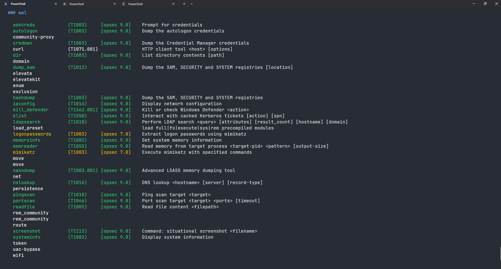
可以在embed 的详细文档中找到所有的相关命令
askcreds¶
askcres是一个Windows凭证窃取功能，通过伪造 Windows 安全弹窗诱骗用户输入用户名和密码。
askcreds [-p prompt] [-n note] [-t wait_time]
- --note: note to display (default: Please verify your Windows user credentials to proceed )
- --prompt: prompt to display (default: Restore Network Connection )
- --wait_time: password to dump credentials for (default: 30 )
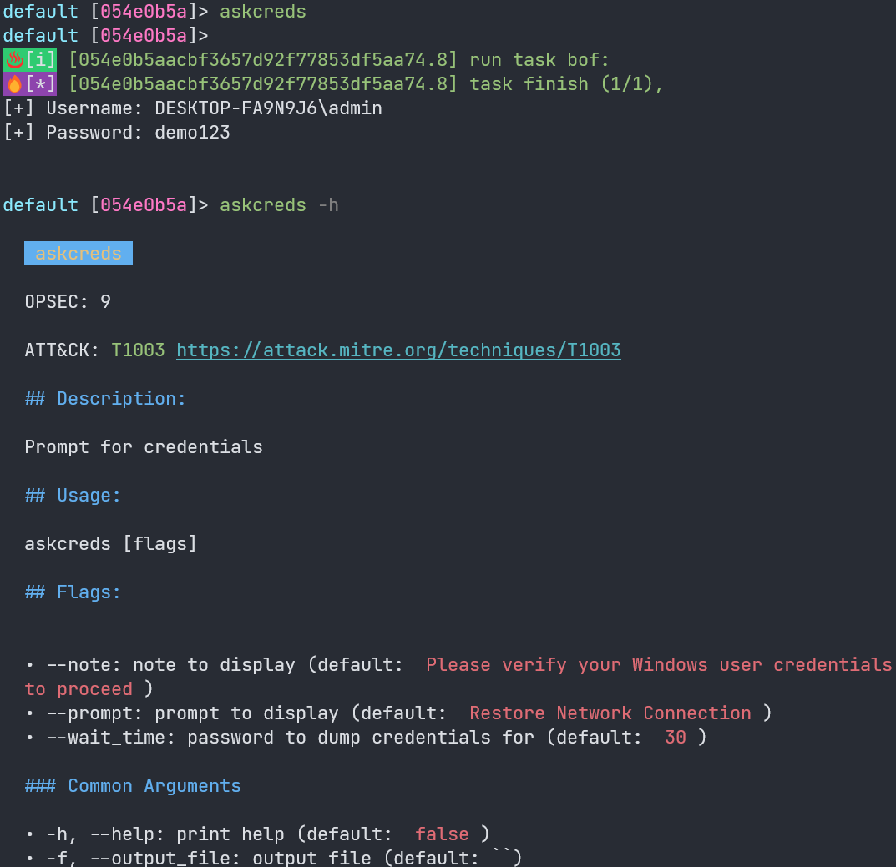
windows会弹出如下窗口
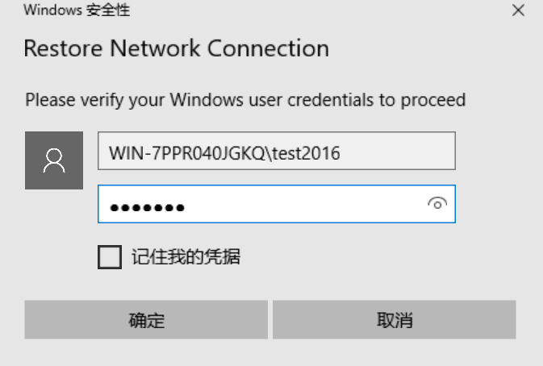
autologon¶
autologon 用于获取 Windows 自动登录的凭据
autologon
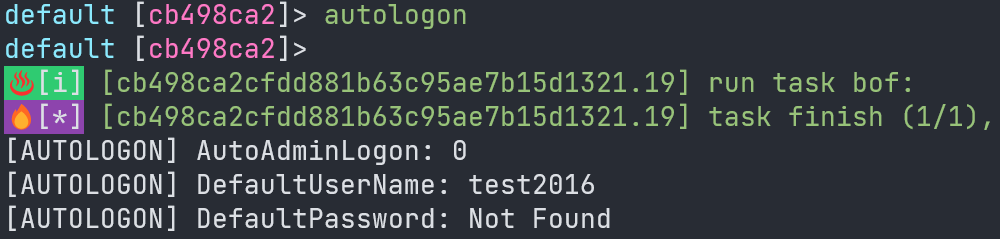
credman¶
credman 用于获取 Windows Credential Manager 中的凭据
credman
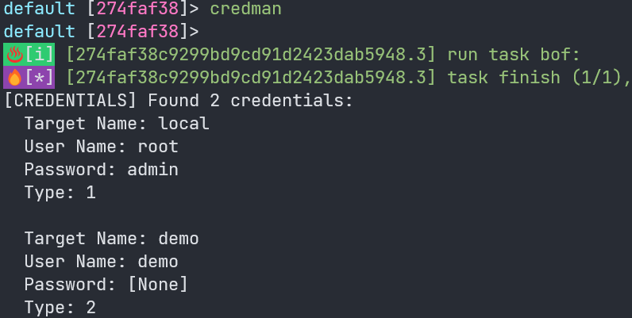
curl¶
curl 用于发送 HTTP 请求, 支持 GET/POST/PUT/PATCH/DELETE的常见方法，以及自定义 header/useragent
curl --host [host] --port [port] --method [method] --header [header] --body [body] --useragent [useragent] --noproxy
Flags如下
- --body: request body (default: ``)
- --disable-output: disable output display (default: false )
- --header: custom header (default: ``)
- --host: target host (default: ``)
- --method: HTTP method (GET, POST, PUT, PATCH, DELETE) (default: GET )
- --noproxy: disable proxy usage (default: false )
- --port: target port (default: 0 )
- --useragent: custom user agent (default: ``)
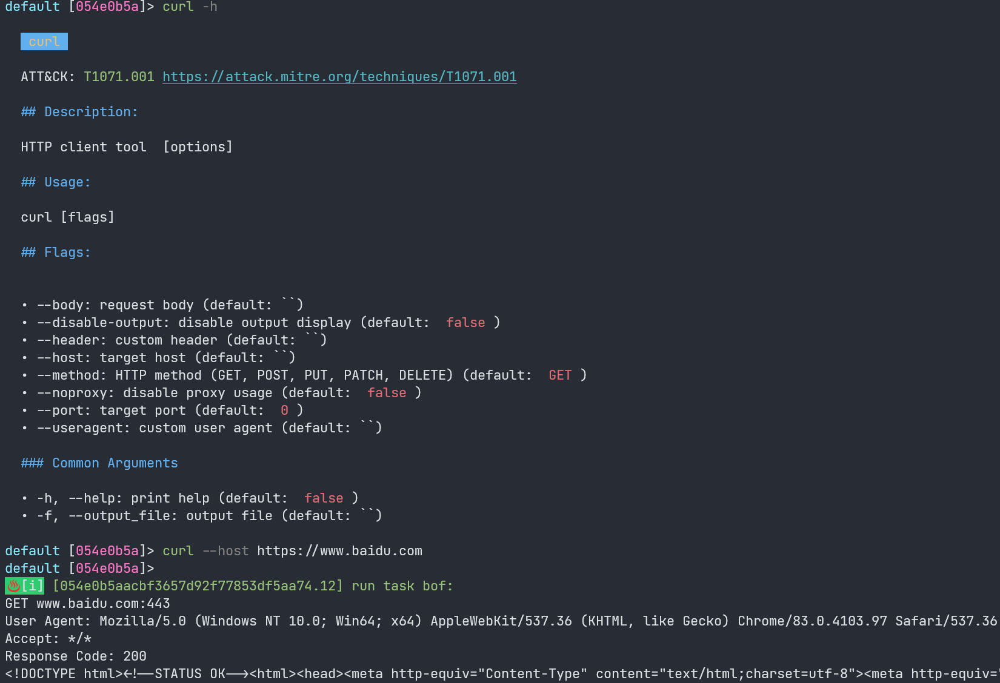
dir¶
dir 用于列出目录下的文件
dir --path [path] --subdirs
- --path: directory path to list (default: `` )
- --subdirs: include subdirectories (optional) (default: false )
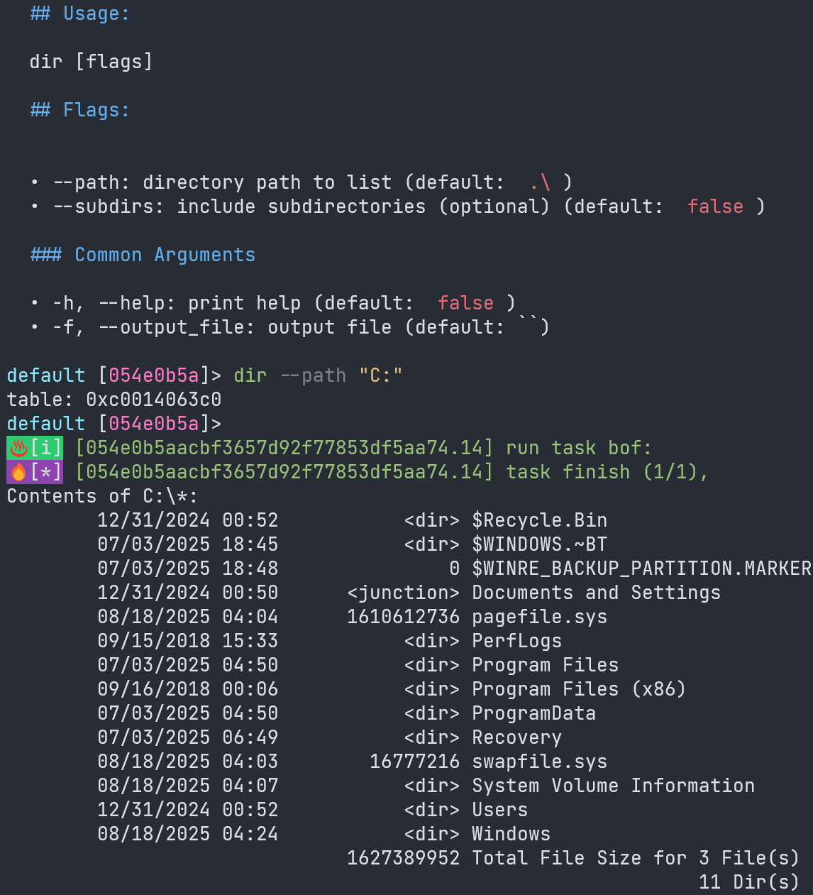
dump_sam¶
dump_sam 用于导出 SAM, SECURITY, SYSTEM 三个注册表文件
dump_sam --location [location]
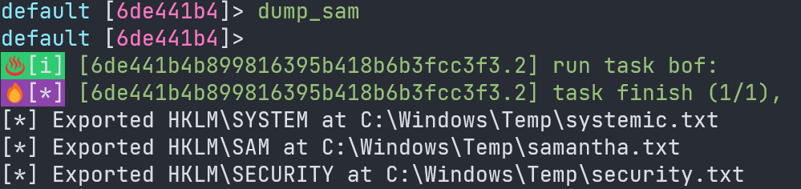
enum¶
enum 用于枚举常见的信息, 包括 arp, dc, dns, dotnet_process, drives, files, localcert, localsessions 等
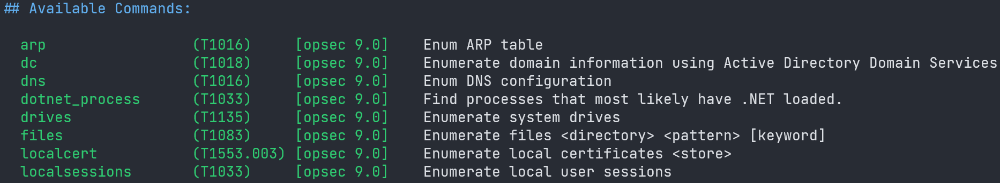
全部用法如下:
enum arp # 枚举arp表
enum dc # 枚举域信息
enum dns # 枚举dns配置
enum dotnet_process # 枚举dotnet进程
enum drives # 枚举驱动器
enum files # 枚举文件
enum localcert # 枚举本地证书
enum localsessions # 枚举本地会话
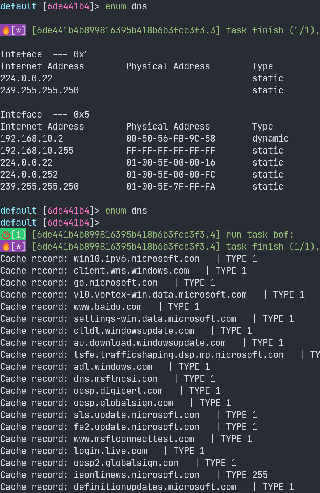
exclusion¶
exclusion 用于管理 Windows Defender 的排除项
exclusion add # 添加排除项
exclusion delete # 删除排除项
exclusion enum # 枚举排除项
- --data 表示路径/进程/扩展名
- --type 表示排除项的类型, 可以是 path/process/extension
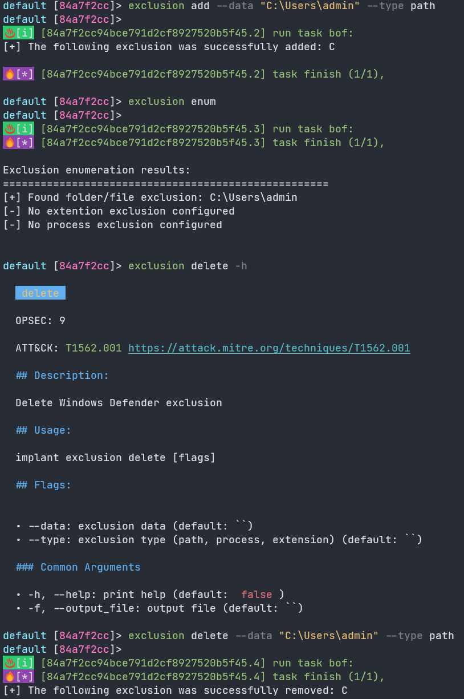
hashdump¶
hashdump 用于提取Windows本地用户的NTLM密码哈希
hashdump
ipconfig¶
ipconfig 用于显示网络配置
ipconfig
kill_defender¶
kill_defender 用于杀死或检查 Windows Defender
kill_defender --action [action]
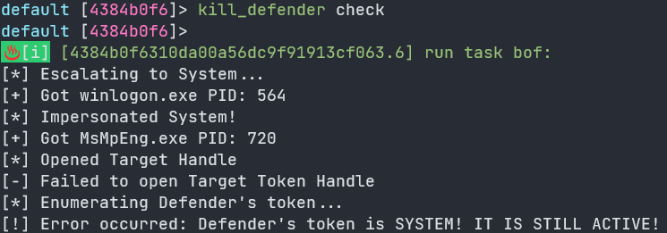
klist¶
klist 用于与缓存的 Kerberos 票据交互
klist --action [action] --spn [spn]

ldapsearch¶
ldapsearch 用于执行 LDAP 查询
ldapsearch --query [query] --attributes [attributes] --result-count [result-count] --hostname [hostname] --domain [domain]

logonpassowrds¶
embed 通过内置 mimikatz 实现了 logonpassowrds 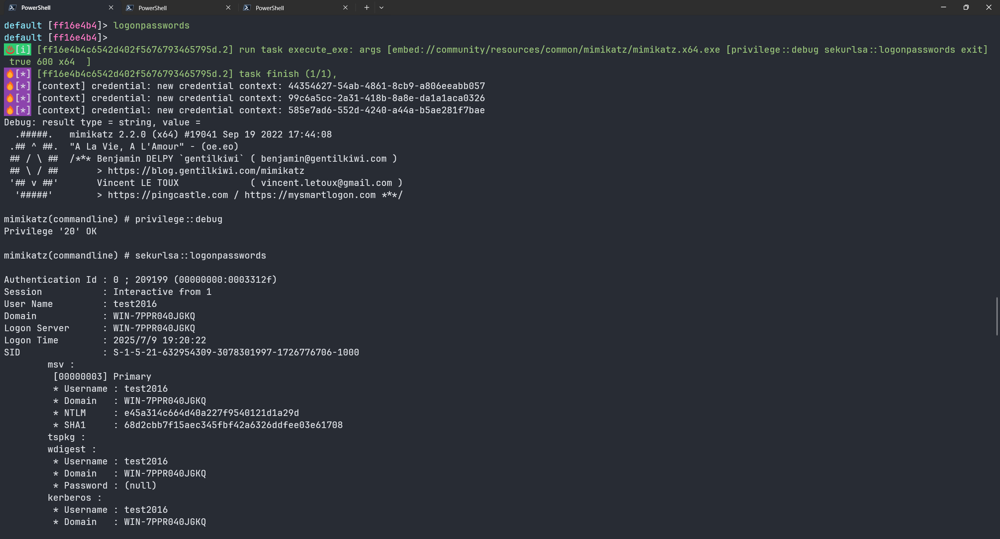
同时对该命令添加了解析，会在抓取的同时存储到 context/credential 中

如果你需要一个 opsec 更高的办法,可以尝试 nanodump
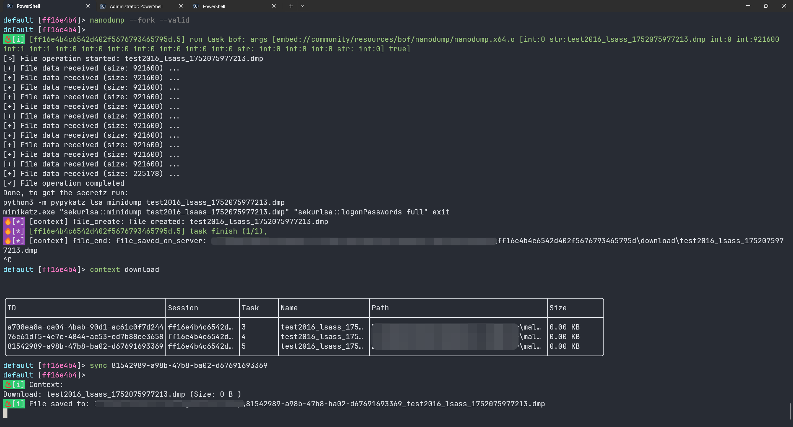
memoryinfo¶
memoryinfo 用于获取系统内存信息
memoryinfo

memoryreader¶
memoryreader 用于从目标进程读取内存
memoryreader --target-pid [target-pid] --pattern [pattern] --output-size [output-size]
- --target-pid 表示目标进程ID
- --pattern 表示内存模式
- --output-size 表示输出大小

mimikatz¶
mimikatz 用于执行 mimikatz 命令, 用法与单行的mimikatz一致。
mimikatz [command1] [command2] ...
mimikatz "privilege::debug" "token::elevate" "lsadump::sam"
(注意exit退出已经默认添加到结尾, 不需要手动添加, 上述命令等价于mimikatz "privilege::debug" "token::elevate" "lsadump::sam" "exit"
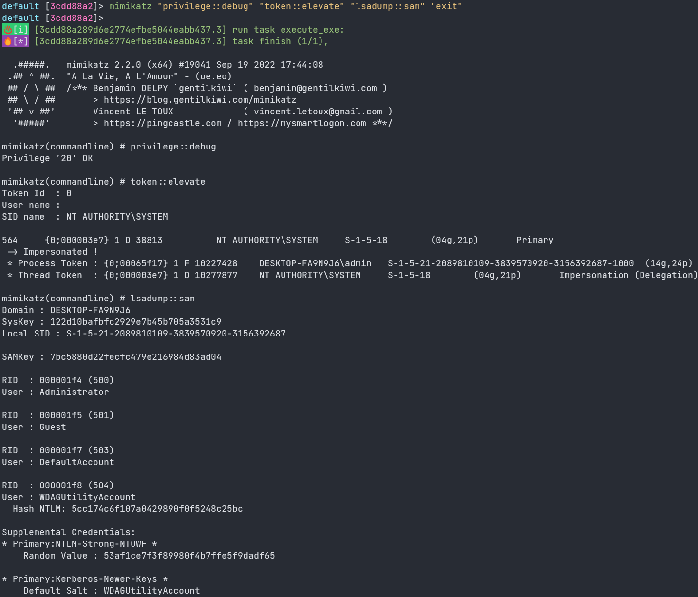
nanodump¶
nanodump 用于导出 lsass 内存转储
nanodump --options [options]

net¶
net 用于执行 net 命令, 用法与单行的 net 一致。
net user add 用于添加用户
net user add --username [username] --password [password]
net user enum # 枚举用户
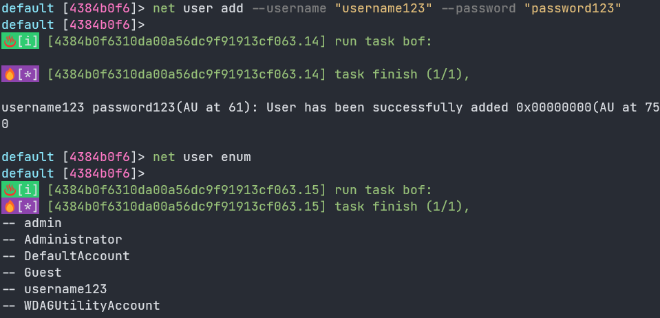
net user query 可以查询用户信息
net user query --username [username] --domain [domain](optional)
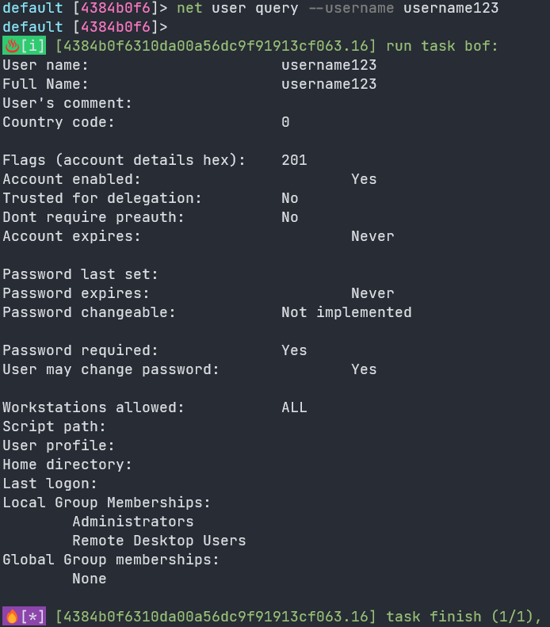
nslookup¶
nslookup 用于执行 nslookup 命令, 用法与原生的 nslookup 基本一致。
nslookup [host] [server] # 简单查询
nslookup --host [host] --server [server] --record-type [record-type] # 带参数查询
Flags如下： - --host 表示目标主机 - --server 表示 DNS 服务器 - --record-type 表示记录类型(A, NS, CNAME, MX, AAAA, etc.)
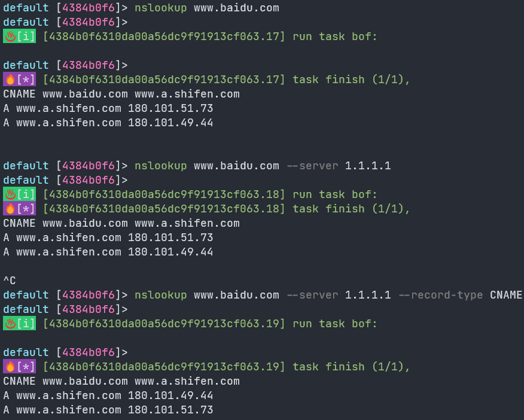
pingscan¶
pingscan 用于执行 ping 扫描.
pingscan --target [target]
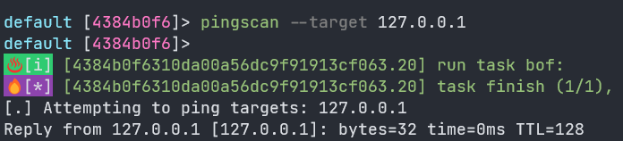
port scan¶
portscan 用于执行端口扫描.
portscan --target [target] --ports [ports]
Flags如下： - --target 表示目标主机(可以参考的格式有 192.168.1.1, 192.168.1.1-192.168.1.255, 192.168.1.0/24) - --ports 表示目标端口(可以参考的格式有 80,443,8080 或 1-1000)
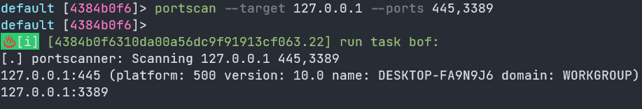
readfile¶
readfile 用于读取文件内容
readfile --filepath [filepath]

route¶
route 用于输出路由表
route print
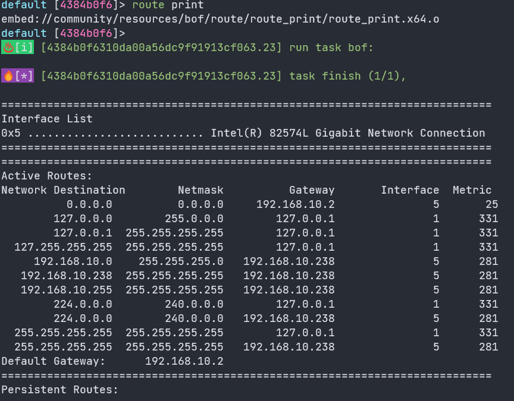
screenshot¶
screenshot 用于截屏
screenshot --filename [filename]
Flags如下： - --filename 表示截屏文件名(默认为 screenshot.jpg)
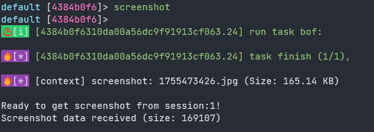
systeminfo¶
systeminfo 用于输出系统信息
systeminfo
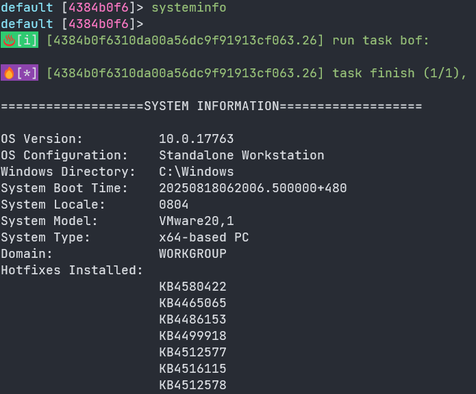
wifi¶
wifi 用于管理 WiFi 连接
wifi enum # 枚举WiFi
wifi dump --profilename [profilename] # 导出WiFi详细配置
Flags如下： - --profilename 表示 WiFi 名称
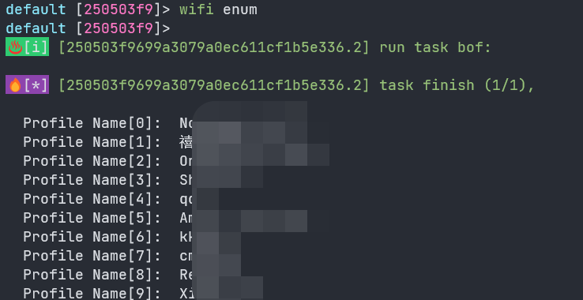
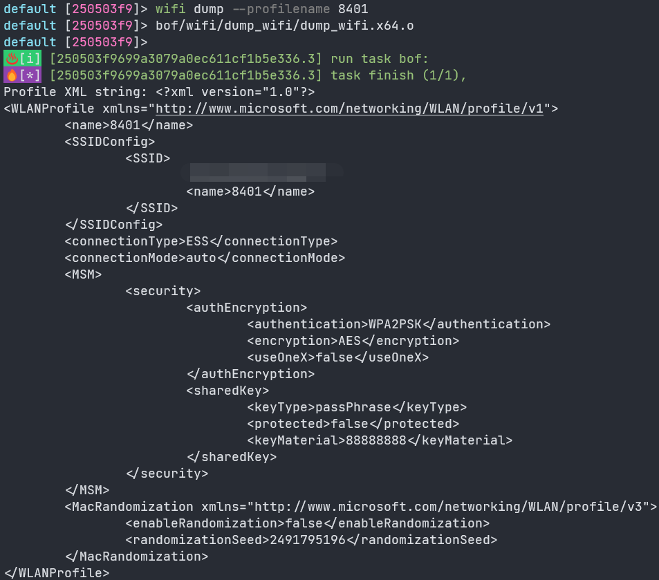
¶
load_prebuild¶
按照命令的分组预打包了各个分组的 module, 用来动态加载. 包括
- full
- fs
- sys
- rem
- net
- execute
如果编译的 nano 的 implant， 可以便捷热加载对应的功能